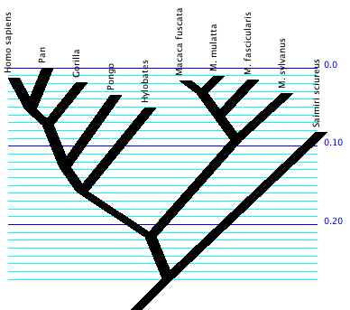
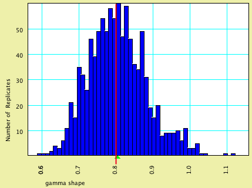
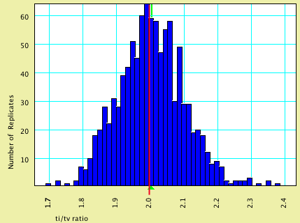
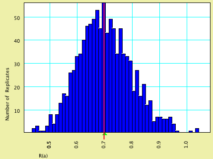
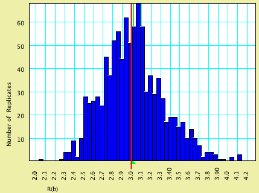
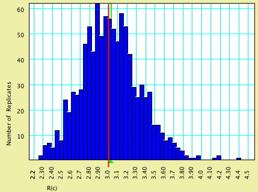
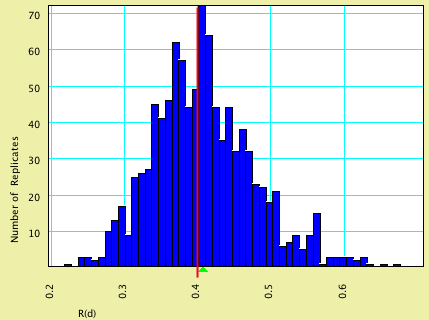
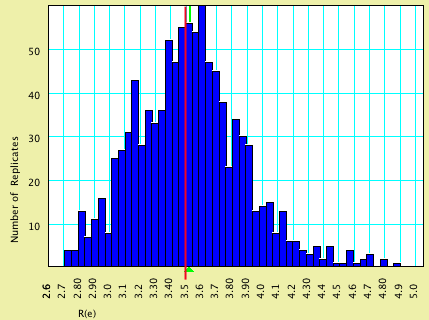

|
|
Genesis: tests of simulation modules |
The quality of the simulation modules in Mesquite 1.0 were tested by simulated 1000 data matrices, each containing 2000 characters, up the branches of the following model tree:

The model used empirical base frequences (with observed base frequences being 0.3 for A and T, and 0.2 for C and G); other aspects of the model varied from test to test, as described below.
PAUP*4.0b10 then estimated a tree quickly using neighbor-joining (using HKY85 distances), and then parameter values were estimated using maximum likelihood on that tree.
This analysis was conducted using the Export Matrices & Batch facility in the Batch Architect package of Mesquite. The resulting distribution of estimated parameter values across the 1000 replicates as well as a comparison between the average estimated values and model values are shown below.
Note that for most parameters the values estimated by PAUP* are slightly greater than that used in the model. It is not yet clear if this is consistent, and, if it is, the reason for it.
This model specified that characters evolved with rates varying in accordance with a discrete gamma distribution, with shape parameter.
| Model Value | Average Estimated Value | |
| gamma shape parameter | 0.80 | 0.8046 |
Here is a histogram of the estimated value, with the model value shown by a vertical red line and the average estimated value by a green triangle:

This model specified that characters evolved at an equal rate; the nucleotides evolved with a transition/transversion ratio of 2.0.
| Model Value | Average Estimated Value | |
| ti/tv | 2.00 | 2.004 |
Here is a histogram of the estimated values, with the model value shown by a vertical red line and the average estimated value by a green triangle:

This model specified that characters evolved at an equal rate; the nucleotides evolved according to a GTR model with rates (0.70, 3.0, 3.0, 0.4, 3.5).
| Model Value | Average Estimated Value | |
| R(a) | 0.70 | 0.7014 |
| R(b) | 3.0 | 3.014 |
| R(c) | 3.0 | 3.027 |
| R(d) | 0.40 | 0.4080 |
| R(e) | 3.5 | 3.525 |
Here are histograms of the estimated values, with the model values shown by vertical red lines and the average estimated values by green triangles:





This model specified that 0.62 of the characters are invariable and the remainder following a discrete gamma shape distribution, with 4 rate categories and shape parameter 1.3; the nucleotides evolved according to a GTR model with rates (0.56, 4.5, 2.86, 1.05, and 0.95).
| Model Value | Average Estimated Value | |
| proportion invariable | 0.62 | 0.6161 |
| gamma shape parameter | 1.30 | 1.357 |
| R(a) | 0.56 | 0.5714 |
| R(b) | 4.50 | 4.642 |
| R(c) | 2.86 | 2.963 |
| R(d) | 1.05 | 1.069 |
| R(e) | 0.95 | 0.9723 |
© David Maddison & Wayne Maddison, 2001-2003